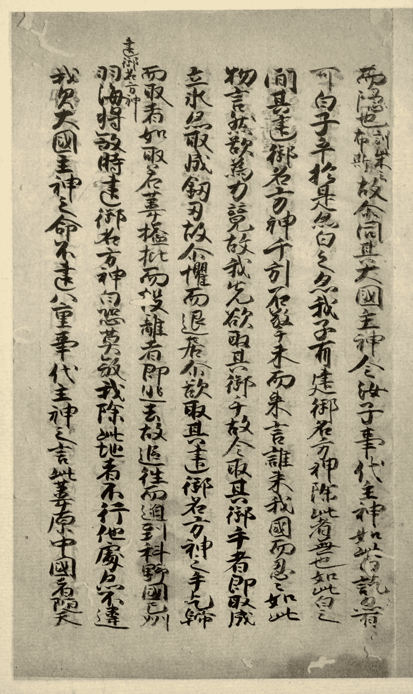

日語歷史由來
日本語，是主要由日本列島流行使用的語言。為甚麼這樣說呢？原來，日本並未有以法律明確規定日語為官方語言，所以日本是沒有法定語言的。
「日語」，一般是指東京的山手地區使用的山手方言「山の手言葉」為基礎的日語現代標準語。

不同時期的日語
- 上古日語
- 6世紀至9世紀
- 中古日語
- 9世紀後半葉至12世紀的平安時代中晩期（斷代有爭議）
- 中世日語
- 12世紀至16世紀
- 近世日語
- 17世紀初至19世紀
- 現代日語
- 19世紀至現在
上古日語
上古日語是指奈良時代及以前使用的古日本語。
在這之前，日本一直以來的欠缺書寫系統，所以這時期以前的日本狀況，絕大多數只能從古中國的記事文獻參考。當時日本積極與中國進行文化交流，令漢字書寫系統帶入日本。日本得以掌握以漢字書寫記錄歷史。
上古日語的分期難以考究，因為這是日文書寫系統發展的最初階段，以前的資料都欠缺文獻記錄。最初階段的考究甚至只能從中國古代的記事找到蛛絲馬跡，例如《三國志．魏志》中找到少量人名和地名的日語詞彙。而現今找到最早期的日本文獻，就是公元712年的《古事記》，所以上古日語的開始被定為712年。日文書寫系統的雛型，就是由這時期開始。《古事記》、《萬葉集》的文法發展成日本最初的書寫系統——萬葉假名。
{kind=link}
中古日語
中古日語盛行於日本平安時代中晩期。現代日本中等教育體系所稱的文語(ぶんご )就是以中古日語為標準。
在這時期，由於遣唐使的實質廢止和日本國風文化的獨自發展，在日語表記上也出現了兩種新的表音符號：平假名和片假名片假名。這種發展簡化了書寫工作，在很大程度上推進了假名文學的新時代。
日本文學因假名的改良得到高速發展，《竹取物語》、《源氏物語》、《伊勢物語》等名著就是由此時期撰寫。
{kind=link}
中世日語
中世日語的時期正正是平安時代貴族社會向武士封建社會過渡的時期。在這個時期，絕大多數古代日語中的特徵都已丟失，更接近現在的日語。
這時期因佛教的興起使日本產生了諸多佛教宗派，大量佛教文獻的編譯與傳播使日本當時識字率有顯著的提升。
16世紀中葡萄牙傳教士抵達日本，對日本語帶來革命性改變，大量外來葡萄牙語進入日語系統。為傳播天主教，葡萄牙傳教士學習日語及編寫了數部語法書如《日本大文典》和《日葡辭書》。
{kind=link}
{kind=link}
{kind=link}